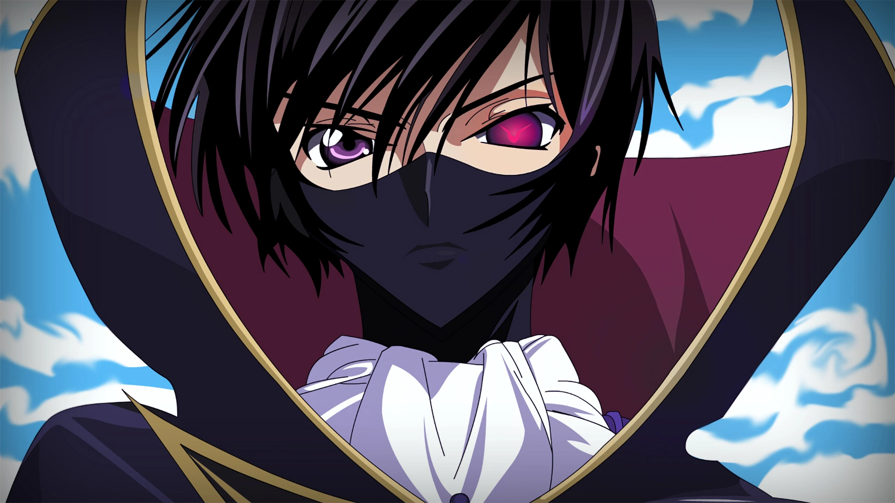
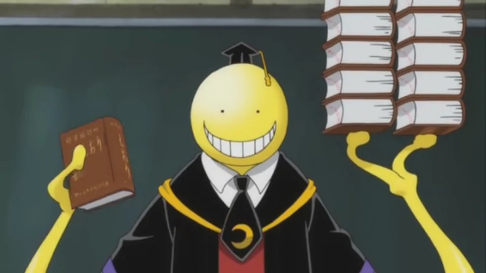

Watching anime has always been an escape from my daily life, and I have learnt almost all of my life lessons from watching anime and reading manga. Some leaders who have inspired me that come from anime are Lelouch vi Brittania from the anime Code Geass: Lelouch of the Rebellion, Koro-sensei from the anime Assassination Classroom, Erwin Smith from the anime Attack on Titan and Sora and Shiro from No Game No Life.
Lelouch vi Britannia 
About Lelouch:
Lelouch vi Britannia is a fictional character from the anime Code Geass: Lelouch of the Rebellion. After being given the power to control others, Lelouch becomes the leader of the rebellion against the Britannian empire.
Lelouch is an inspiring leader because he follows a motto of “Talk will not change the world, taking action will.”
Two quotes of his that can inspire others to become leaders are:
If the king doesn't move, then his subjects won't follow
As a leader, Lelouch is a task-oriented leader, shown by his autocratic leadership style and him being a dictator. He kills those who do not follow his orders and mind controls his armies to prevent them from starting a rebellion. If he were to be categorised by the four true colours, I believe his innate colour would be green, his learned colour would be orange, and his underdeveloped colours would be blue and gold.
How Lelouch Influences Me:
Lelouch is an icon on how if you need something to get done, then do it yourself. If you wait for others to do it for you, it just may never get done.
Although the settings in our lives are completely different, the message stays the same. Lelouch has shown me as a person that if I do want something or if I think something needs to change, then I should start getting it done myself.
The only part where I would disagree with Lelouch is his thought process of “to destroy evil, you must become a greater evil.” Through the anime, Lelouch has shown me that, almost always, evil will end up in tragedy.
As a child, I watched the anime Code Geass: Lelouch of the Rebellion. It was an extremely interesting anime to watch as it combined fantasy with mecha (a genre that includes giant robots that humans pilot) and a plot where history diverts as Britain takes over most of the world, becoming the Holy Britannian Empire.
Lelouch stood out to me the most as he was extremely smart and always seemed to know what to do. He was ruthless and was an anti-hero that went about the wrong way to initiate world peace. He unified the world and became the only evil that prevented world peace, and finally, he had someone kill him.
Koro-sensei 
About Koro-sensei:
Koro-sensei is an alien-like being from the anime Assassination Classroom. When he was a human, he was captured and experimented on and became alien-like. He destroyed the moon and then chose to become a teacher at Class 3-E of Kunugigaoka Junior High School.
Koro-sensei is a leader who inspires me because he shows us that no matter what happens, you can always keep your head held high. A quote of his that can inspire others is:
As a leader, Koro-sensei is a relationship-oriented leader, shown by how he cares for each of his students and helps all of them build relationships with each other; getting them to work together as a class, rather than stay isolated. If he were to be categorised by the four true colours, his innate colour would be orange and his learned colour would be blue. His underdeveloped colours would be green and gold. Before being experimented on, his innate colour would be green and his learned colour would be gold. The experiments vastly changed Koro-sensei's mentality and during the experiments, he learned how to understand the feelings of others.
How Koro-sensei Influences Me:
Koro-sensei has taught me that you should always put in your best effort, because one day, the consequences might be too much. When I watched Assassination Classroom, I could relate to the main character a lot. From the lessons within the anime, I learnt that you should always do your best, no matter what your doing.
Koro-sensei connects with each of his students individually, and helps each of them develop their strengths, while reducing their weaknesses. I can relate to this because I love to code and I won't turn down a chance that can improve my coding. I also will learn new coding languages (improve my JavaScript) as it will help me better accomodate when I code with HTML and CSS.